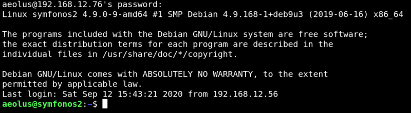
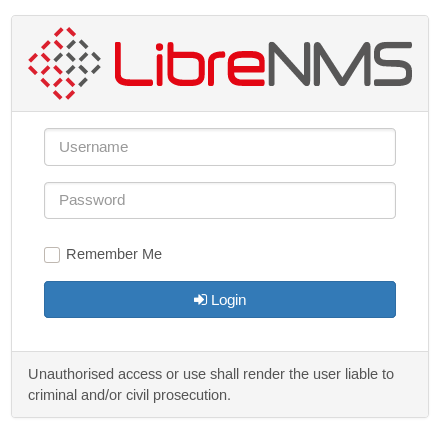

4.2 Open a Tunnel
a) Open a tunnel to port 8080 using "ssh tunneling:.
$ssh
–L 8080
:
127.0.0.1
:
8080 aeolus@192.168.12.76
Output:

b) Connet to the Web Service on port 8080.
On your Kali Linux browser visit http://127.0.0.1:8080

You'll find a “LibreNMS web application”.
Index